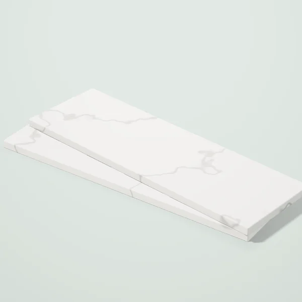
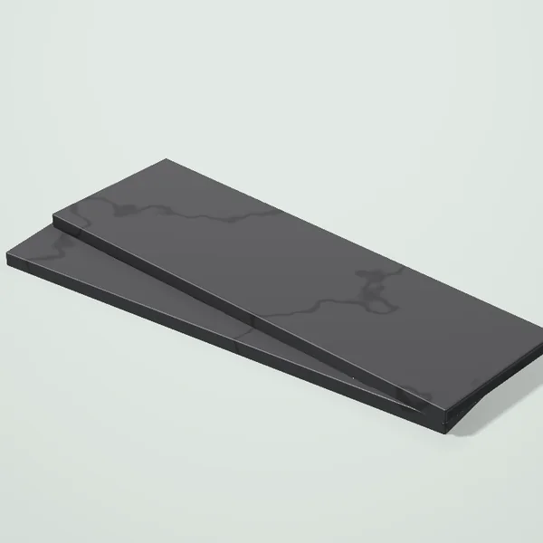
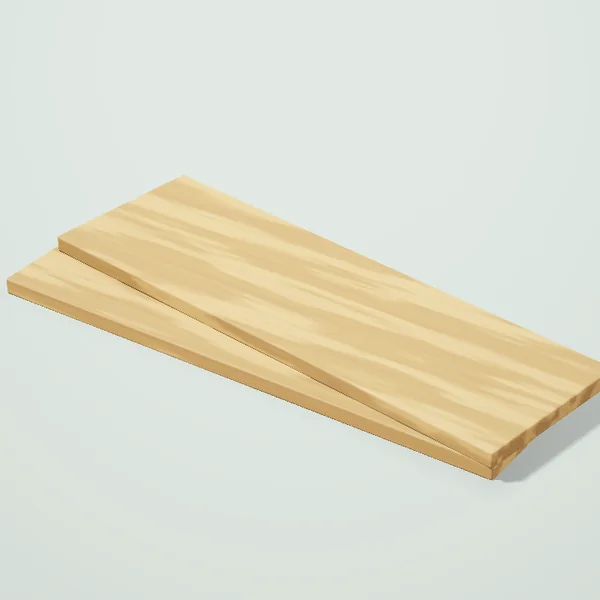
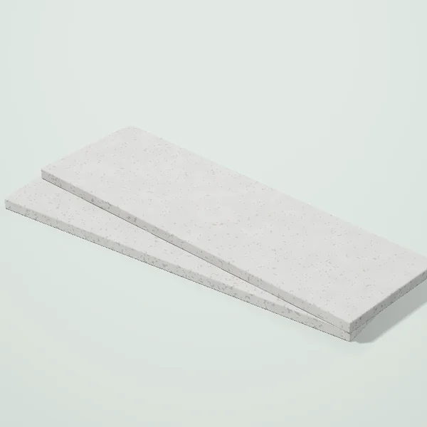
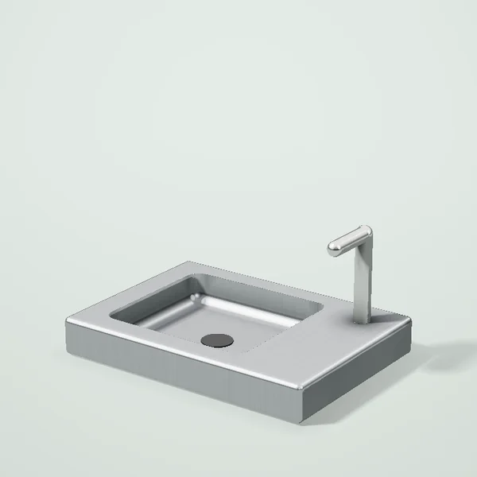
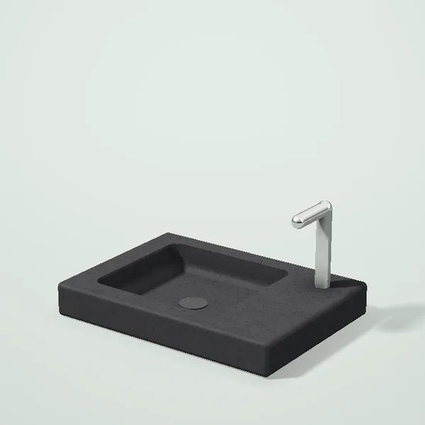
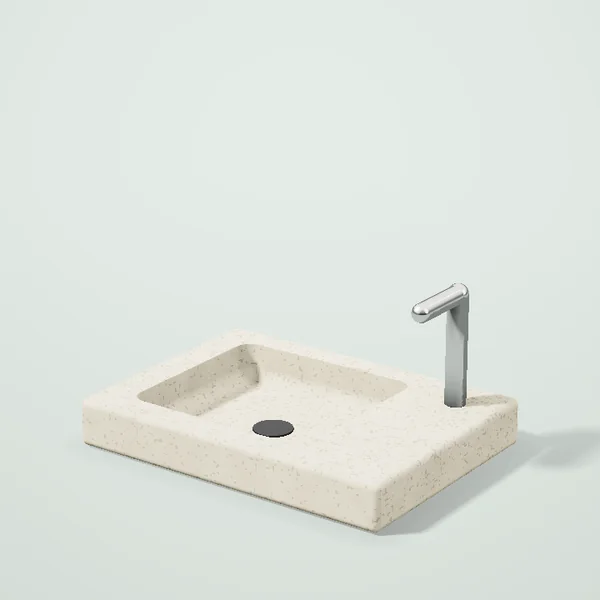

Oşxonalar Toşkentda
Oşxona modullari
 Oşxona pastki moduli 60 sm980 000 so‘mdan
Oşxona pastki moduli 60 sm980 000 so‘mdan Oşxona moduli 60 sm, oq yaltiroq1 029 000 so‘mdan
Oşxona moduli 60 sm, oq yaltiroq1 029 000 so‘mdan Oşxona moduli 60 sm, grafit1 029 000 so‘mdan
Oşxona moduli 60 sm, grafit1 029 000 so‘mdan Oşxona moduli 60 sm, eman1 078 000 so‘mdan
Oşxona moduli 60 sm, eman1 078 000 so‘mdan- Oşxona pastki moduli 40 sm735 000 so‘mdan
Stoleşnitsalar

Stoleşnitsa 3 m, 38 mm760 000 so‘mdan
Stoleşnitsa 3 m, qora toş836 000 so‘mdan
Stoleşnitsa 3 m, eman760 000 so‘mdan
Stoleşnitsa 3 m, beton760 000 so‘mdan
Moykalar

Zanglamas pölat moyka 60×50441 000 so‘mdan
Granit moyka 60×50, qora765 000 so‘mdan
Granit moyka 60×50, bej765 000 so‘mdan